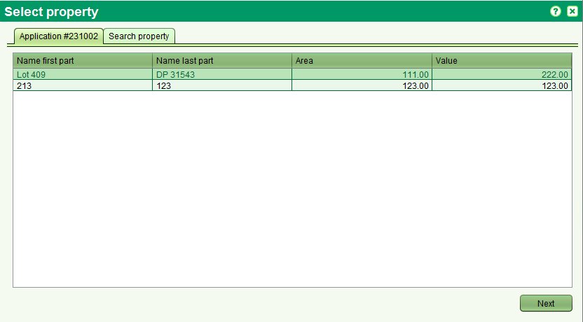
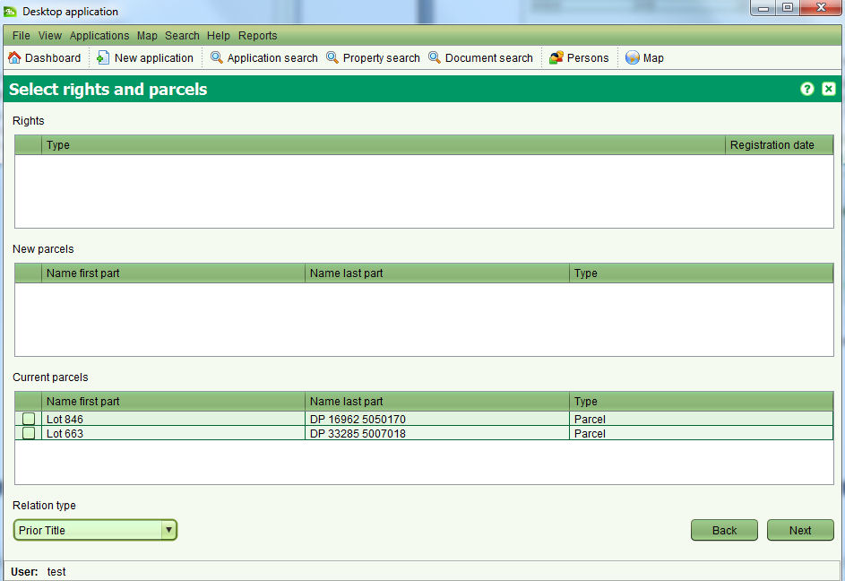

Il est possible de créer une nouvelle propriété à partir d'une propriété existante en utilisant soit le nouveau titre de pleine propriété, soit le nouveau titre d'appartement, soit l'enregistrement d'un nouveau droit de propriété, soit un service de nouveau statut. En utilsiant une demande assignée, démarrer le service relatif à la nouvelle propriété des onglets de services des détails de la demande pour accèder à la fonction de lien de propriété.

Il est demandé si le nouvel objet de propriété doit être attaché à un ancien
Après avoir sélectionné la propriété à remplacer, il est possible de sélectionner les droits et les parcelles à lier à la nouvelle propriété en spécifiant le type de relation entre les cas de propriété (ex: titre précédent, titre racine).

Un message de rappel pour effectuer les modifications de l'objet de la propriété courante s'affiche. Une fois que la nouvelle propriété a changé de statut de En Attente à Courante, cliquer Terminer dans le formulaire Propriété de la propriété parente.
Voir aussi